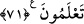
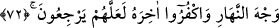

71. Ey ehl-i kitap! Neden doğruyu eğriye karıştırıyor ve bile bile gerçeği
gizliyorsunuz?
“Ey kitap ehli niçin hakkı bâtıla karıştırıyorsunuz?” Haktan maksat, Allah’ın Hz.
Mûsâ ve Îsâ’ya indirdiği kitaptır. Bâtıldan maksat ise insanların tahrif edip kendi
elleriyle yazdıklarıdır. Hakkı bâtıla karıştırmaktan maksat, ellerindeki batılla
karıştırılmış nüshaların Allah’dan geldiğini söylemek sûretiyle, bâtıl inançlarını hak
imiş gibi göstermeleridir. “Hakkı gizliyorsunuz.” Yani Hz. Muhammed’in
peygamberliğini müjdeleyen ve özelliklerini belirten ayetleri gizliyorsunuz. Hem de
kitabınızda hak olarak bulunduğunu bile bile.
72. Ehl-i kitaptan bir gurup şöyle dedi: “Mü’minlere indirilmiş olana sabahleyin
(görünüşte) inanıp akşamleyin inkâr edin. Belki onlar (böylece dinlerinden)
dönerler.
“Kitap ehlinden bir grup” Bu grup, onların uyduğu başkanlarıdır. Îmân edenlere
indirilen Kur’ân’a günün ilk saatlerinde îman edin; yani îman etmiş görünün. Günün
sonunda inkâr edin; kâfirliğinizi ortaya koyun derler. (Gündüzün yüzü) nden
maksat, günün ilk görünen kısmıdır. Nitekim karşılaşma ânında insan organlarından ilk
görünen de yüzdür. Yani hiç düşünmeden birden bire îman etmiş de sonra düşünüp bu
îmanın yanlış olduğunu anlamış ve îmanından dönmüş gibi esas inancınız olan küfrü
gösterin. Belki onlar, yani mü’minler de sizin döndüğünüz gibi sahip oldukları îmandan
dönerler.
Buradaki gruptan maksat, Kab b. el-Eşref ile Mâlik b. es-Sayf’tır. Bunlar, kıble
değiştirilince, arkadaşlarına şöyle demişlerdi: “Bunların Kâbe’ye karşı namaz
kılmalarına dâir âyetlere inanıp siz de günün ilk saatlerinde Kâbe’ye karşı ibâdet edin,
günün sonunda ise Kubbe-i Sahra’ya (Kudüs) yönelerek ibâdet edin, belki müslümanlar,
“bunlar bizden daha bilgililer, îmandan döndüler galiba” diyerek Kâbe’ye yönelmekten
vazgeçerler.”